Look n°4
Entrée lumineuse rose et dorée
Une entrée lumineuse et douce pour bien accueillir : console en arche dorée, miroir organique lumineux, pouf en velours rose, banc en bouclette et suspensions en verre ambré. Voici les articles pour recréer ce look chez toi.
Prix au 10/11/2026
-
Console d'entrée en arche dorée, effet marbre
2 plateaux blancs effet marbre et un cadre doré avec une grande arche. 120 × 30 × 80,5 cm.
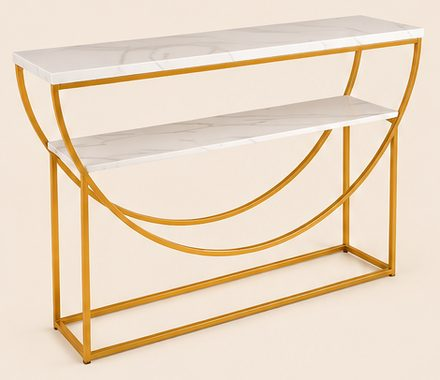
93,99 €Voir sur Amazon -
Miroir LED à bords ondulés, 45 × 100 cm
Miroir sans cadre de forme organique, halo de lumière chaude tout autour. 45 cm de large, 100 cm de haut.
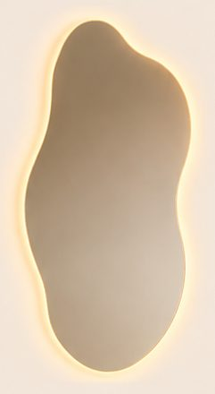
129,99 €Voir sur Amazon -
Banc ovale en bouclette crème avec coffre
Gros bourrelets en bouclette, coffre de rangement sous l'assise. 110 × 45 × 42 cm. Le vrai banc a 4 bourrelets (5 sur l'image).
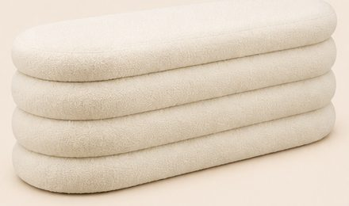
-
Pouf rond en velours rose, pieds dorés
Velours rose poudré, 4 pieds épingle dorés. Ø 40 × H 40 cm.
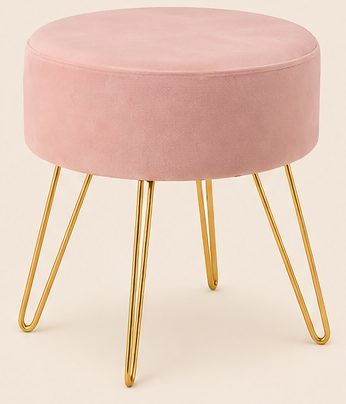
39,99 €Voir sur Amazon -
Tapis de couloir rose à poils longs, 80 × 200 cm
Rose clair uni, poils longs très doux.
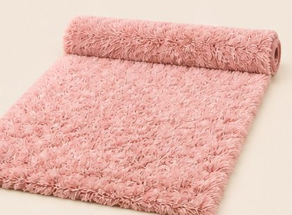
47,99 €Voir sur Amazon -
Suspensions boule en verre ambré et laiton doré (×2)
Globe de 25 cm en verre ambré légèrement martelé, douille et tige dorées, câble noir. Prix pour une suspension : il en faut 2 comme sur l'image.
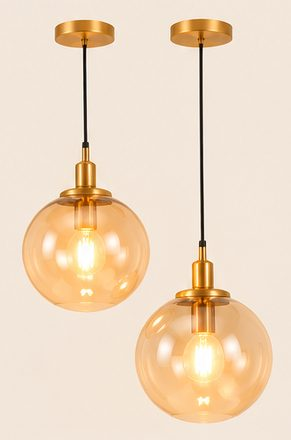
79,99 € l'unitéVoir sur Amazon -
Vases de sol bouteille blancs et branches de cerisier roses
Lot de 3 vases en métal blanc mat en forme de bouteille : 68, 51 et 41 cm de haut ; celui de l'image est le grand (68 cm). Les vrais ont de fines rainures verticales ; sur l'image, le vase est lisse. Branches : 6 branches de cerisier de 109 cm, fleurs roses.
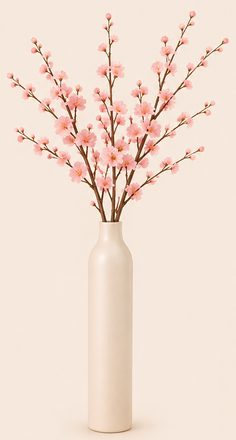
-
Plante tombante artificielle (pothos), 86 cm
Feuilles en cœur qui retombent d'un petit pot, à suspendre.
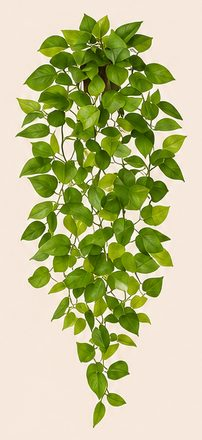
10,99 €Voir sur Amazon -
Diffuseur de parfum à bâtonnets, 200 ml
Flacon en verre transparent, collerette argentée, bâtonnets naturels.
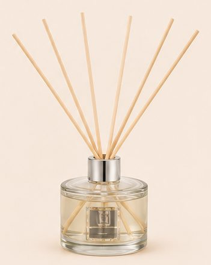
13,77 €Voir sur Amazon -
Ruban LED COB blanc chaud, 5 m
Ligne de lumière continue, sans points, 3000 K, avec variateur et télécommande. À coller sous les plateaux de la console.
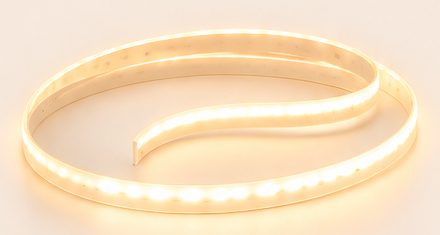
29,99 €Voir sur Amazon -
Patères rondes en laiton doré (lot de 4)
Disque rond de 3 cm, laiton massif brossé.
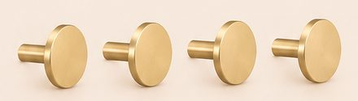
18,99 €Voir sur Amazon
Enregistrer ce look sur Pinterest
Comment naît un lookComment chaque article est choisi, mesuré et vérifiéImage d'inspiration générée par IA. Prix indicatifs, revérifiés toutes les deux semaines.